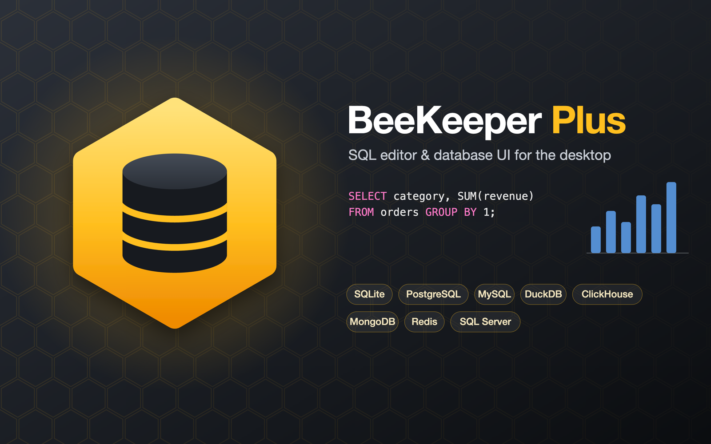
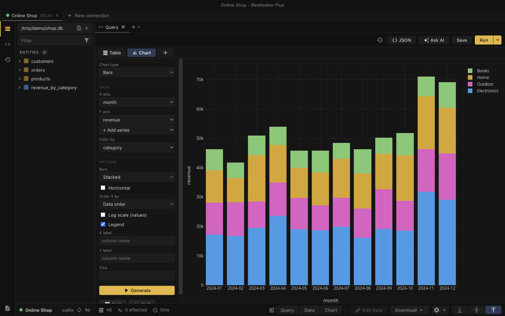

A desktop SQL editor for nine database engines, with a CodeMirror query editor, a charting panel, inline data editing, report export and an AI assistant.
BeeKeeper Plus is a desktop SQL editor and database browser modelled on the look and feel of Beekeeper Studio: one dark window with a connection manager, a tree of tables and views, tabbed query editors and a results grid.
It talks to SQLite, libSQL/Turso, DuckDB, PostgreSQL, MySQL, SQL Server, ClickHouse, MongoDB and Redis through the same interface, so switching from a local file to a production server does not change the way you work. Results can be sorted, inspected in a JSON sidebar, edited in place, exported or turned into charts.
On top of the editor it adds a report builder that collects queries, data excerpts, charts and notes into a shareable bundle, and an AI assistant that turns questions in plain language into queries for the connected schema.
Built to see how far a commercial-grade database client can be recreated with web technologies in a desktop shell.

Write a query in an editor with syntax highlighting and schema-aware autocomplete, run it at the cursor or all at once, and read the answer in a sortable grid with a JSON view of the selected row.
Switch the same result to a chart: columns map to axes, colour and size, with bars, lines, areas, scatter plots, histograms, box plots, pies and heatmaps, and the picture can be exported as an image.
Each database engine has its own driver running in the application's main process behind a shared messaging layer, so the interface only ever deals with queries, result sets and table structures. The interface is a Vue 3 application with a CodeMirror 6 editor, and charts are drawn with Plotly.
The app is packaged as a signed macOS bundle and DMG, and is verified by unit tests and an end-to-end suite that drives the real application.
Desktop shell: main process, IPC and preload bridge, the per-engine database drivers, the AI providers and encrypted credential storage through safeStorage.
The whole interface — workspace tabs, entity tree, results grid, chart panel, structure editor and report builder — written with Vue 3 single-file components and bundled with Vite.
Plain JavaScript on both sides of the IPC boundary, including pure, unit-tested modules for statement splitting, autocompletion, chart data and report generation.
CodeMirror 6 SQL editing with dialect-aware completion, plus drivers for relational, analytical and embedded engines (better-sqlite3, pg, mysql2, mssql, DuckDB, ClickHouse and libSQL).